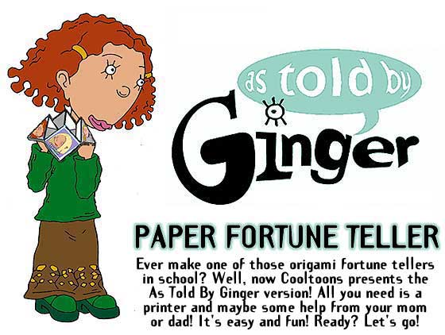
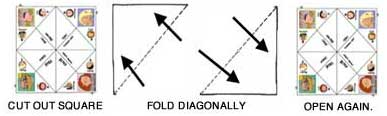
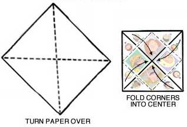
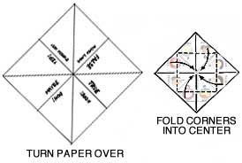
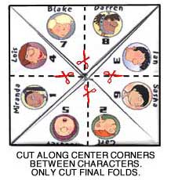
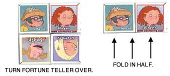
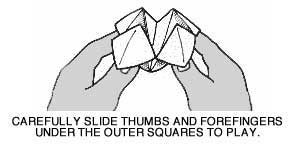

START BY PRINTING IT OUT!
You need Adobe Acrobat to read the file, which is free to download.
If you don't have it, you can get it by clicking
HERE
or on this link:
PRINTED IT? GOOD! NOW FOLLOW THE DIRECTIONS BELOW:
1. After you print out the fortune teller, cut it along the sides so that you have a square-shape.
Fold the color side down on both diagonals (see diagram).
Then unfold.

2. Turn the paper over to the blank side and fold all 4 corners over to the center.

3. Turn the paper over again and fold all 4 corners over to the center of the other side.

4. Use your scissors to cut the spaces between each character's flap.
BE CAREFUL! Only cut the character's flap!
If you cut thru the entire block, the Fortune Teller won't work!
This step allows you to lift up each character separately to see the answers under each one.

5. Turn the Fortune Teller over, fold it in half, and carefully slide your thumbs and forefingers under the outer-squares with Ginger, Dodie, Macie, and Courtney on them and move the Fortune Teller back and fourth to play!


HOW TO TELL FORTUNES
1. 1 to 2 people can play.
2. Have someone ask the As Told By Ginger Paper Fortune Teller a question (or ask it one yourself!).
Make it a"yes or no" or a "true or false" question.
Concentrate and clear your mind.
3. Have the Questioner select Ginger, Dodie, Macie or Courtney.
4. Depending upon which character they choose, open and close the As Told By Ginger Paper Fortune Teller while spelling out the selected character's name.
5. When the name has been spelled out, keep the As Told By Ginger Paper Fortune Teller open, revealing 4 of the inner-flaps.
Have the Questioner select one of the characters in the inner flaps that are visible.
6. Either open and close the As Told By Ginger Paper Fortune Teller while you spell out the name of the selected character OR open and close it as many times as the number under the selected character's picture.
(Your choice!)
7. Have the Questioner select the final character out of all that are visible once this is done.
Lift that character's flap. Your fortune is revealed!